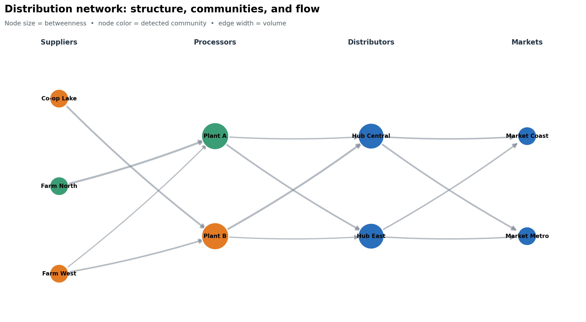
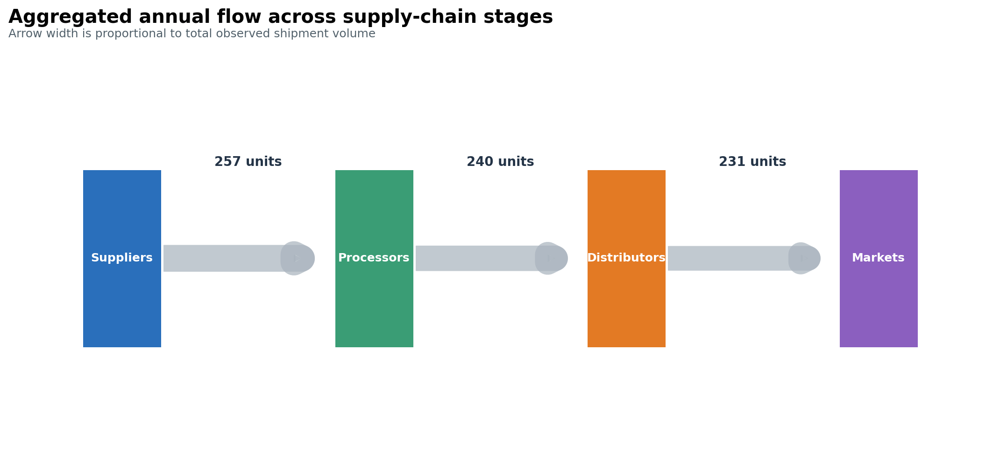

Code
edges = [
("Farm North", "Plant A", {"volume": 84}),
("Plant A", "Hub East", {"volume": 68}),
("Hub East", "Market Metro", {"volume": 51}),
]By the end of this chapter, you will be able to:
The examples use a small fictional distribution network. Products move from suppliers through processing and distribution facilities to markets. The data are intentionally compact enough to inspect, but the workflow scales to larger graphs when aggregation and filtering are applied first.
A graph is not simply a table drawn with circles and lines. Decisions about what becomes a node, what becomes an edge, whether direction matters, and how repeated events are aggregated determine the claims the visualization can support.
A graph, \(G=(V,E)\), contains a set of nodes (or vertices), \(V\), and a set of edges, \(E\). Nodes represent entities; edges represent relationships or transactions between them.
| Component | Supply-network example | Useful attributes |
|---|---|---|
| Node | supplier, facility, or market | stage, region, capacity |
| Edge | product movement | volume, cost, lead time |
| Direction | origin \(\rightarrow\) destination | source and target |
| Weight | annual shipment volume | edge width or opacity |
An edge list is usually the most convenient analytical form:
edges = [
("Farm North", "Plant A", {"volume": 84}),
("Plant A", "Hub East", {"volume": 68}),
("Hub East", "Market Metro", {"volume": 51}),
]An adjacency matrix is useful for algebra and heatmaps, while a node table keeps attributes separate from relationships. Preserve stable node identifiers in all three representations; labels can change, identifiers should not.
NetworkX provides graph classes for common relationship structures:
Graph: undirected, with at most one edge per node pair;DiGraph: directed, with at most one edge per ordered pair;MultiGraph and MultiDiGraph: parallel edges are retained; andimport networkx as nx
graph = nx.DiGraph()
graph.add_node("Plant A", stage="processor", region="North")
graph.add_edge("Farm North", "Plant A", volume=84, lead_days=2.0)
assert nx.is_directed(graph)
print(graph.number_of_nodes(), graph.number_of_edges())Choose the graph class before calculating metrics. Converting a directed graph to an undirected graph changes the meaning of degree and paths. Likewise, collapsing a multigraph can hide repeated transaction types unless their weights are aggregated deliberately.
Useful checks include:
assert all(data["volume"] > 0 for *_, data in graph.edges(data=True))
assert not list(nx.selfloop_edges(graph))
assert nx.number_weakly_connected_components(graph) == 1Validation catches modeling errors while they are still recognizable in the data. A visually plausible graph can otherwise conceal duplicate entities, reversed edges, missing weights, or disconnected records.
A layout maps nodes to positions. Position usually reflects an algorithm, not geography or a measured coordinate.
| Layout | Best suited to | Important limitation |
|---|---|---|
| Spring / force-directed | exploring clusters and bridges | stochastic unless seeded |
| Kamada–Kawai | small graphs emphasizing graph distance | slower on large graphs |
| Circular | comparing connections without implying rank | crossings accumulate quickly |
| Multipartite | stages, tiers, or ordered layers | requires a meaningful subset attribute |
| Geographic | spatial infrastructure | distance may dominate topology |
Use a fixed seed for reproducible force-directed layouts. Encode only a few attributes at once:
Area-based encodings require care. If a centrality value controls marker area, pass it as the node-size value directly; do not square it again. Apply sensible minimums so low-valued nodes remain visible.

Figure Figure 14.1 separates structural encodings. Because the horizontal tiers carry domain meaning, readers do not have to infer the supply chain solely from arrowheads.
Centrality metrics answer different questions:
| Metric | Question | Caveat |
|---|---|---|
| In/out-degree | How many direct relationships enter or leave? | ignores distant structure |
| Weighted degree | How much total activity touches the node? | large volume is not influence |
| Betweenness | Which nodes lie on many shortest paths? | depends on the meaning of distance |
| PageRank | Which nodes receive links from important nodes? | sensitive to direction and damping |
For weighted shortest-path metrics, NetworkX interprets an edge weight as a distance or cost. Shipment volume is the opposite: a high volume often signals a strong connection. The accompanying script therefore calculates betweenness on unweighted topology. In another application, create a distance such as 1 / volume only when that transformation has a defensible meaning.
Community detection groups nodes with relatively dense internal connections. It is exploratory—not proof that real organizational or social groups exist. The script applies greedy modularity to an undirected projection, then uses the result as a categorical color encoding.
undirected = graph.to_undirected()
communities = nx.community.greedy_modularity_communities(
undirected, weight="volume"
)
betweenness = nx.betweenness_centrality(graph, normalized=True)
pagerank = nx.pagerank(graph, weight="volume")Report the graph transformation, algorithm, and weight semantics alongside the visual. Without them, the metrics are difficult to reproduce or audit.
Direction is essential when edges represent movement, influence, citations, or dependencies. Weighted degree in a directed graph separates incoming and outgoing totals:
in_volume = dict(graph.in_degree(weight="volume"))
out_volume = dict(graph.out_degree(weight="volume"))A bipartite graph represents relationships between two node types—for example, products and suppliers or authors and papers. A projected supplier network connects suppliers that share a product, but projection discards information. Retain the original bipartite graph and document whether projected edge weights count shared neighbors, transactions, or another quantity.
For multigraphs, decide whether parallel edges are distinct events or should be aggregated. A defensible aggregation table might contain source, target, total_volume, shipment_count, and median_lead_days, preserving more information than a single summed weight.
Node-link diagrams emphasize connectivity. Sankey diagrams emphasize the magnitude of flows between stages, with link width proportional to quantity. Alluvial diagrams are closely related and are often used to show changes in membership or composition across categorical dimensions.
import plotly.graph_objects as go
figure = go.Figure(go.Sankey(
node={"label": labels},
link={"source": source_ids, "target": target_ids, "value": volumes},
))
figure.update_layout(title="Annual product flow")
figure.show()Before constructing the chart, map labels to integer indices and validate that all values are non-negative. Aggregate small flows when they obscure the main paths. If conservation is expected, test it: for an intermediate node, incoming flow should equal outgoing flow after accounting for inventory, loss, or transformation.

The static flow view in Figure 14.2 is designed for reports and print. The same aggregated values can drive an interactive Sankey chart when hover detail and path tracing add genuine value.
Do not manually adjust link widths to improve appearance. If thin links are unreadable, aggregate, filter, annotate, or provide a companion table rather than distorting the quantities.
Trees are graphs with one unique path between connected nodes. Common hierarchy views include:
A treemap encodes magnitude by rectangle area and hierarchy by enclosure. It is space-efficient but poor for precise comparison, especially among small or non-adjacent rectangles. Sort consistently, keep hierarchy depth modest, and provide numeric labels or tooltips. Use a bar chart when accurate ranking is the main task.
Never force a general network into a tree: nodes with multiple parents or cycles will be misrepresented. Check the topology first with functions such as nx.is_tree() or nx.is_directed_acyclic_graph().
A network hairball contains so many overlapping nodes, edges, and labels that structure disappears. More pixels rarely solve the underlying analytical problem.
Redesign in this order:
Always disclose filtering thresholds. Removing low-weight edges can make a network appear more fragmented and centralize the remaining nodes.
Faceting networks by time, region, or relationship type often makes structural change easier to compare than an animation. Keep node positions stable across panels so movement does not masquerade as topological change.
The reproducible practice script builds the fictional distribution network, computes community and centrality measures, aggregates stage-to-stage flows, and saves both figures and summary tables.
Run it from the repository root:
python scripts/python/12-network-and-flow-visualization.pyExpected outputs:
results/figures/12-network-communities.png;results/figures/12-stage-flow.png;results/12-network-node-summary.csv;results/12-stage-flow-summary.csv; andresults/12-network-figure-manifest.csv.